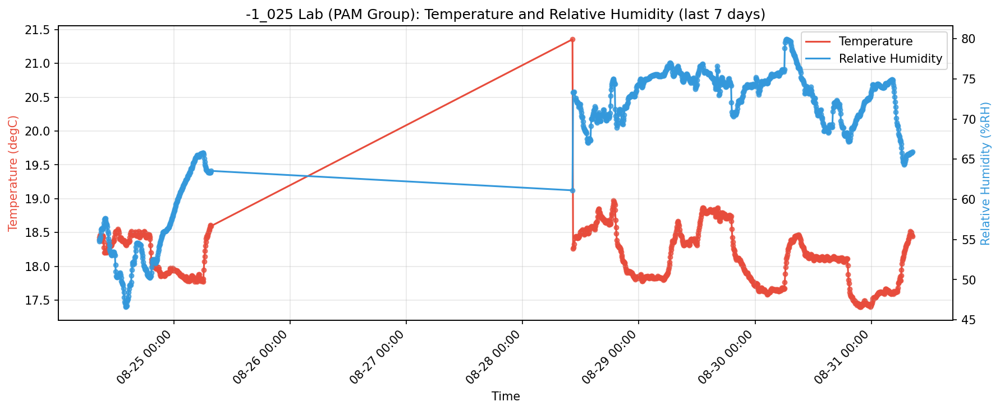
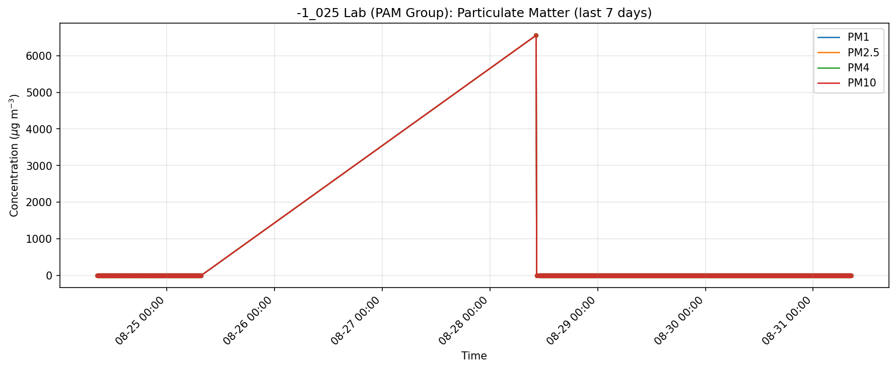
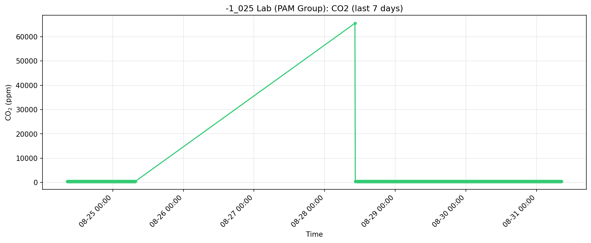
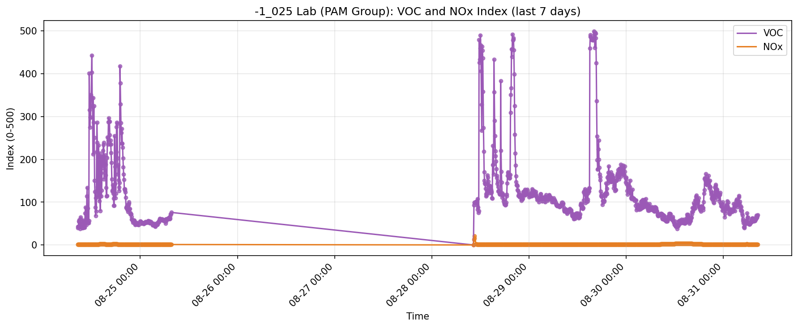

Laboratory air quality monitoring • Generated 2026-08-31 08:31:50
This plot tracks thermal comfort conditions over time. Sensirion IAQ guidance highlights that many occupants feel comfortable around 20-25 C and 40-60% RH, while persistently high temperature or humidity can worsen indoor air quality.

This plot compares particulate levels across size bands (PM1, PM2.5, PM4, PM10). The IAQ brochure notes that smaller particles penetrate deeper into the respiratory system, and PM2.5/PM10 are major contributors to indoor air health risk.

This plot shows CO2 in ppm as a ventilation and occupancy proxy. Sensirion IAQ material references cognitive-performance impacts as CO2 rises, so sustained elevations can indicate a need for increased fresh-air exchange.

These are Sensirion relative index signals (not direct concentration): VOC Index is referenced to recent history with a baseline near 100, and NOx Index with a baseline near 1, each on a 1-500 scale. Viewing both together helps distinguish air-quality events such as cleaning/cooking, outdoor infiltration, and fresh-air recovery.
